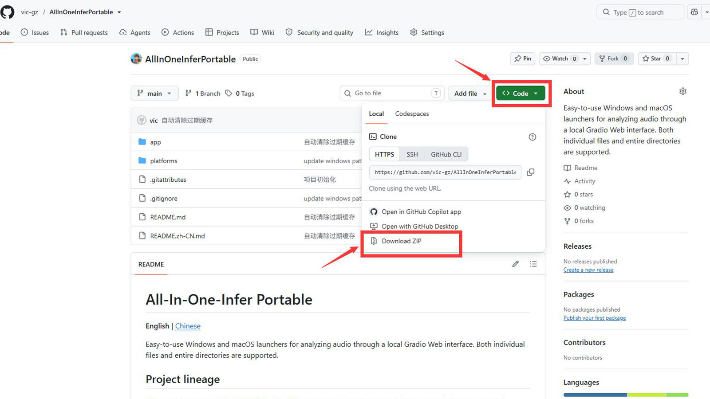
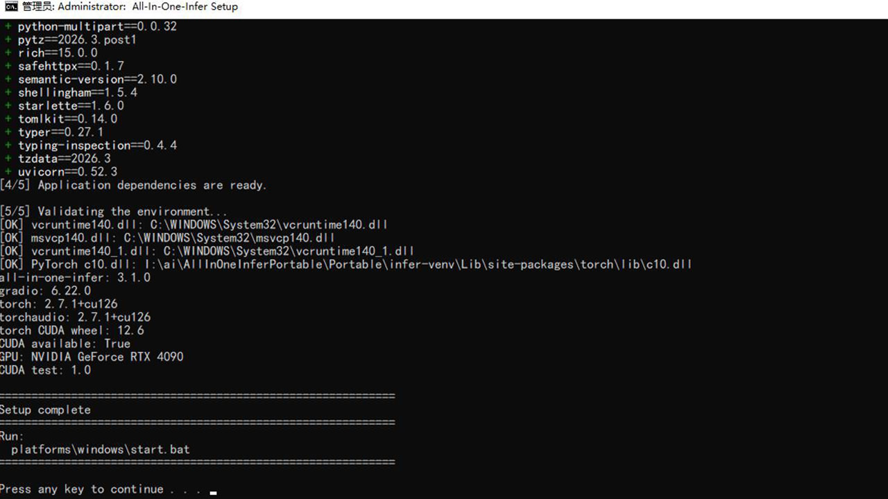
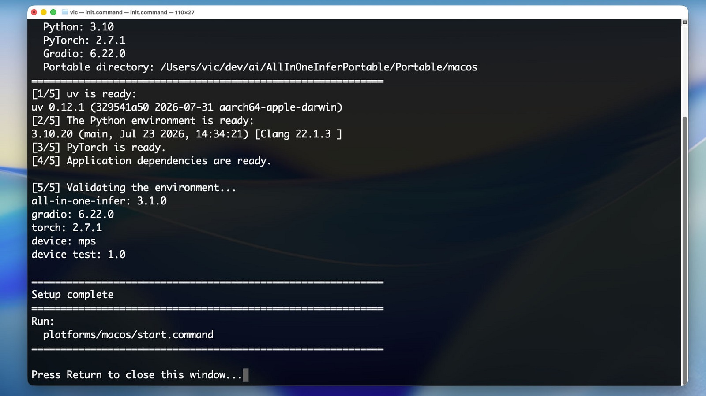
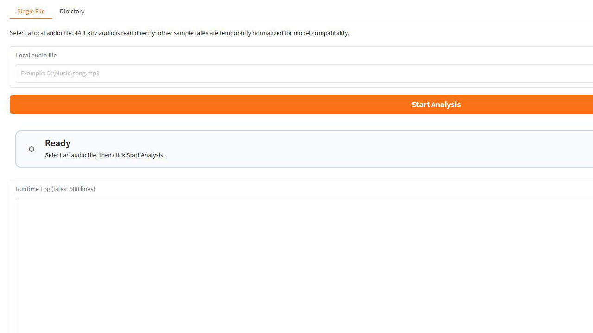
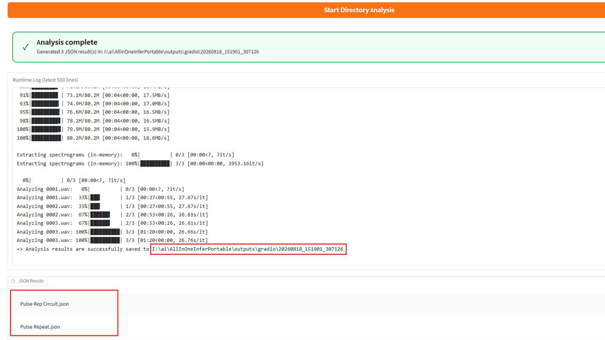
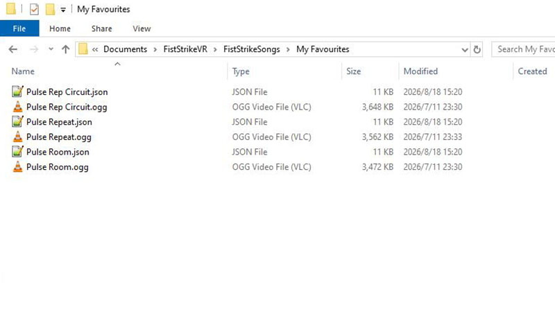
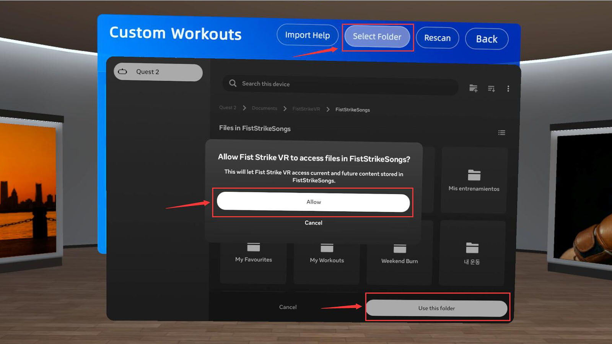
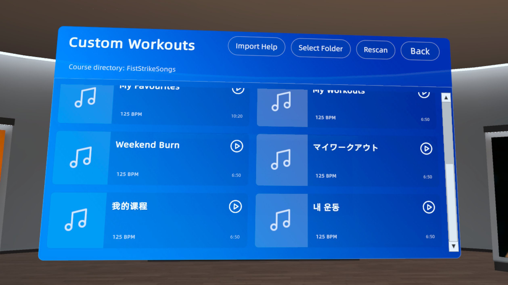
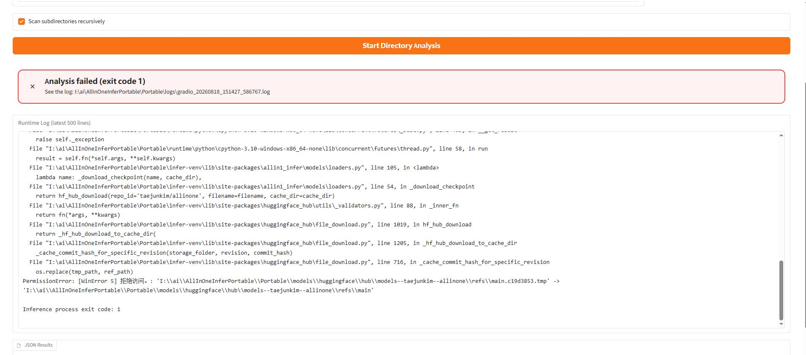

Five steps to your first workout
The first setup takes the longest because the PC tool downloads its environment and models. After that, adding music only requires analysis, copying, and a rescan.
- 01InstallInitialize the PC tool once
- 02AnalyzeGenerate a matching JSON per song
- 03OrganizeOne folder becomes one course
- 04CopyTransfer the root folder over USB
- 05SelectScan the folder and start training
Every audio file must have a JSON with the exact same base name in the same course folder. For example, Song A.ogg pairs with Song A.json.
Prepare the equipment and space
Windows x64, or an Apple Silicon (M-series) Mac.
A charge-only cable cannot expose Quest storage to the computer.
Allow at least 6 GB for CPU/Mac or 12 GB for NVIDIA CUDA.
Quest stores the source audio and creates a local cache during the first scan.
The PC tool reads and analyzes audio on your computer. Its Gradio page runs at 127.0.0.1; using it does not upload your music to a remote server.
Download and initialize the analysis tool
1.1 Download the project
- Open the AllInOneInferPortable project.
- Select Code → Download ZIP, then fully extract the archive to a local drive.
- Do not run scripts inside the ZIP preview. Move the extracted folder to its final location before initialization.

1.2 First-time setup on Windows
- Double-click
platforms\windows\init.bat. - Select “Yes” if Windows requests administrator permission.
- If an NVIDIA GPU is detected, choose CUDA when appropriate. Choose CPU if you are unsure.
- Keep the window open until it displays
Setup complete.
The CPU package typically downloads about 1.5–2.5 GB; CUDA about 3–5 GB. The first analysis may also download model files.

1.2 First-time setup on macOS
Only Apple Silicon (M-series) Macs are supported. Open Terminal in the project folder and run:
chmod +x platforms/macos/init.command platforms/macos/start.command
./platforms/macos/init.commandIf Gatekeeper blocks the script, right-click init.command in Finder, select “Open,” and confirm once. Wait for Setup complete.

Analyze music and generate JSON
2.1 Start the local web page
platforms\windows\start.batplatforms/macos/start.commandYour browser normally opens http://127.0.0.1:7860 automatically. Enter it manually if needed. Closing the launcher window stops the local service.
2.2 Choose an analysis mode
Single File
- Select Browse... and choose audio
- Select Start Analysis
- Wait for the completed status
Directory
- Select Browse... and choose a folder
- Choose whether to include subfolders
- Select Start Directory Analysis

The analysis tool can read WAV / FLAC / MP3 / OGG / M4A / AAC / WMA, but Quest currently imports only MP3, WAV, and OGG. Convert other formats first, then analyze the final converted file.
2.3 Find the results
Each run creates a timestamped folder here:
AllInOneInferPortable/
└─ outputs/
└─ gradio/
└─ <run timestamp>/
├─ Song A.json
└─ Song B.jsonRuntime logs are stored in Portable/logs/. Keep the relevant log if an analysis fails.
You can use the upstream openmirlab/all-in-one-infer project to analyze the music and generate beat data instead. Follow that project's README for environment setup, analysis, and output instructions.

Organize the course folders
Create a root folder on your computer named FistStrikeSongs. Every direct child folder becomes one course in the game.
FistStrikeSongs/ ← Select this root folder in game
├─ Weekend Burn/ ← Course 1
│ ├─ 01 - Artist A - Song A.ogg
│ ├─ 01 - Artist A - Song A.json
│ ├─ 02 - Artist B - Song B.mp3
│ └─ 02 - Artist B - Song B.json
└─ Slow Warm-up/ ← Course 2
├─ 01 - Artist C - Song C.wav
└─ 01 - Artist C - Song C.jsonOnly direct child folders are scanned. Do not nest another song folder inside a course.
The filenames before their extensions must be identical. Matching case is recommended.
Audio placed directly in the FistStrikeSongs root is not imported.
Songs are sorted by filename. Prefix names with 01 -, 02 -, and so on.
Morning Run.oggMorning Run.jsonMorning Run.oggMorning_Run.jsonDo not place Song.mp3 and Song.ogg in the same course. They are treated as duplicate audio and neither is imported.
Copy the course over USB
- Connect Quest to your computer with a data-capable USB cable and keep the headset unlocked.
- If a file access prompt appears in the headset, select “Allow.”
- Open Quest internal shared storage in the computer's file manager.
- Open
Documents/FistStrikeVR/. Create the folders manually if they do not exist. - Copy the entire
FistStrikeSongsfolder into it. Wait for the transfer to finish before disconnecting USB.
Quest internal storage/
└─ Documents/
└─ FistStrikeVR/
└─ FistStrikeSongs/
├─ Weekend Burn/
│ ├─ 01 - Artist A - Song A.ogg
│ └─ 01 - Artist A - Song A.json
└─ Slow Warm-up/
├─ 01 - Artist C - Song C.wav
└─ 01 - Artist C - Song C.json
Select the folder and start training
- Start Fist Strike VR and open “Custom Courses.”
- Select “Choose Folder” in the upper-right area.
- In the system folder picker, open
Documents/FistStrikeVR/FistStrikeSongs. - Stay at the
FistStrikeSongsroot and select “Use this folder,” then allow access. Do not enter one individual course before confirming. - Return to the game and wait for the scan. Select a course card to start training.


The game reads each analysis JSON and copies valid songs into the app cache. Unchanged songs reuse that cache on later scans. Do not quit the game while a scan is running.
Add, replace, or remove songs
- Analyze each new song on the computer and collect its matching JSON.
- Add the pair to an existing course or create a new direct child course folder.
- Copy the changes to Quest over USB, confirming replacements or deletions as needed.
- Return to Custom Courses and select “Rescan.”
Use “Choose Folder” again if you replace the entire root folder. Changes inside the currently authorized folder only require a rescan.
Common issues
Quest storage does not appear on the computer
Confirm that the USB cable supports data, keep the headset unlocked, and allow file access inside Quest. If it still does not appear, reconnect with a different USB port or cable.
No courses appear in the game
Confirm that you selected the FistStrikeSongs root and that it contains at least one direct child course folder. Songs at the root and deeper nested folders are not scanned.
The game reports a missing analysis file
Audio and JSON must be in the same course folder with exactly matching base names. For example, Song.mp3 must pair with Song.json.
The audio format is unsupported
Quest currently supports MP3, WAV, and OGG. Convert the source audio to one of these formats, then generate a new JSON from the converted file.
The analysis JSON is invalid or the song is unavailable
Delete the old JSON and analyze the audio again with the latest PC tool. Do not edit JSON manually. Generate a new JSON whenever the audio file changes.
A course contains a filename conflict
Two audio files cannot share one base name, even with different formats. Rename the audio files and generate new matching JSON files.
The scan or cache operation fails
Check free space on Quest, confirm the USB copy completed, and scan again. If needed, test with a smaller course first.
The analysis page shows “Analysis failed (exit code 1)” or WinError 5
If the error looks like the example below, first close the PC analysis tool, delete the Portable/models folder inside the tool directory, then restart the tool and analyze the music again. The model files will be downloaded again, so keep the computer online and wait for the download to finish.

Portable/models before analyzing again.The PC tool does not initialize or start
Run the platform's initialization script again, then check your network, disk space, and Portable/logs/. For WinError 5, check UAC, Windows Security, and antivirus software. On macOS, run chmod +x platforms/macos/*.command again.
MP3 decoding fails in the PC tool
Install FFmpeg, or convert the audio to WAV/OGG before analyzing it. Do not download individual DLL files from unofficial websites.
Turn a favorite track into your next workout
Start with one MP3, WAV, or OGG and complete the full flow before building a larger course. That makes any problem much easier to isolate.